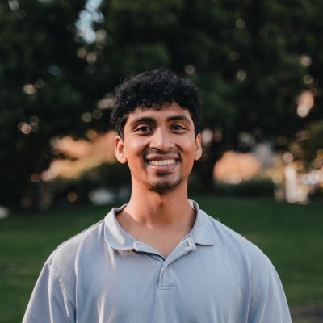

Schedule (Tentative)
| Time | Session |
|---|---|
| 08:00 – 08:20 | Opening Remarks – Welcome & Workshop Overview |
| 08:20 – 08:40 |  Opening KeynoteKeynote Dr. Walter Zimmer University of California Los Angeles (UCLA) & Technical University of Munich (TUM), USA AbstractAbstract will be announced closer to the workshop date. BioSpeaker bio will be announced closer to the workshop date. |
| 08:40 – 09:00 | Keynote 2Keynote Prof. Dr. Jiaqi Ma University of California Los Angeles (UCLA), USA AbstractAbstract will be announced closer to the workshop date. BioSpeaker bio will be announced closer to the workshop date. |
| 09:00 – 09:20 |  Keynote 3Keynote Prof. Davide Scaramuzza University of Zurich (UZH), Switzerland AbstractAbstract will be announced closer to the workshop date. BioSpeaker bio will be announced closer to the workshop date. |
| 09:20 – 09:40 |  Keynote 4Keynote Prof. Cordelia Schmid INRIA, France  AbstractAbstract will be announced closer to the workshop date. BioSpeaker bio will be announced closer to the workshop date. |
| 09:40 – 10:00 |  Keynote 5Keynote Prof. Dr. Angela Dai Technical University of Munich, Germany AbstractAbstract will be announced closer to the workshop date. BioSpeaker bio will be announced closer to the workshop date. |
| 10:00 – 10:30 | Coffe Break & Poster Session I (Malmo Massan Exhibit Hall) |
| 10:30 – 10:50 |  Keynote 6Keynote Prof. Andreas Geiger University of Tübingen, Germany  AbstractAbstract will be announced closer to the workshop date. BioSpeaker bio will be announced closer to the workshop date. |
| 10:50 – 11:10 |  Keynote 7Keynote Prof. Dr. Manmohan Chandraker University of California San Diego (UCSD), USA  AbstractAbstract will be announced closer to the workshop date. BioSpeaker bio will be announced closer to the workshop date. |
| 11:10 – 11:30 |  Keynote 8Keynote Prof. Dr. Daniel Cremers Technical University of Munich, Germany AbstractAbstract will be announced closer to the workshop date. BioSpeaker bio will be announced closer to the workshop date. |
| 11:30 – 12:00 | Panel Discussion I: Academic Track Panel |
| 12:00 – 13:00 | Lunch Break & Networking (Malmo Arena - Arena Room) |
| 13:00 – 13:20 | Keynote 9: From Road Miles to Compute - Scaling Autonomous Driving with World ModelsKeynote Vassia Simaiaki Wayve, UK AbstractAutonomous driving has long scaled through road miles: larger fleets, more data, and more physical testing. World models offer a complementary path, turning compute into a scalable engine for simulation and evaluation. This talk traces their evolution from realistic scene generation to interactive, multimodal environments that place the driving policy inside the loop. We will highlight GAIA-4, Wayve’s latest world model, and explore how closed-loop camera and radar generation can produce counterfactual futures grounded in real journeys, enabling repeatable evaluation of end-to-end driving behaviour. BioVassia Simaiaki is passionate about taking research into application and has spent the last decade of her career in computer vision and deep learning. She leads AI research and development at Wayve, focusing on pushing the boundaries of generative simulation and world modelling continuing to accelerate the driving performance and evaluation of autonomous vehicles. |
| 13:20 – 13:40 | Keynote 10: The Alpamayo Open Platform for Autonomous Driving: Reasoning VLAs, End-to-End Simulation, and Closed-Loop RLKeynote Dr. Peter Karkus NVIDIA, USA AbstractIn this talk I will introduce Alpamayo, NVIDIA's open platform for reasoning-based autonomous vehicle development. Alpamayo contains a family of open-weight reasoning VLA models that produce interpretable chain-of-thought traces alongside trajectories. It also includes the critical tooling around them: among others, 1,700 hours of curated driving data; and AlpaSim, a neural reconstruction-based end-to-end simulator. Finally, I will talk about a next frontier: closed-loop RL post-training of large VLA or WAM models using AlpaGym, our distributed closed-loop RL framework built on top of AlpaSim and Cosmos RL. BioPeter Karkus is a Senior Research Scientist at NVIDIA, at the Autonomous Systems and Physical AI Research Group. He obtained his PhD from the National University of Singapore, and has previously held visiting research appointments at MIT, CMU, Google, and DeepMind. His research interests include autonomous driving, robotics and machine learning, with particular focus on end-to-end vision-language-action models, world models, closed-loop evaluation and reinforcement learning. |
| 13:40 – 14:00 |  Keynote 11Keynote Dr. José M. Álvarez NVIDIA, USA AbstractAbstract will be announced closer to the workshop date. BioSpeaker bio will be announced closer to the workshop date. |
| 14:00 – 14:20 |  Keynote 12Keynote Dr. Katie Luo Waymo, USA  AbstractAbstract will be announced closer to the workshop date. BioSpeaker bio will be announced closer to the workshop date. |
| 14:20 – 14:40 | Keynote 13Keynote Dr. Tony (Xuewei) Qi Motional, USA AbstractAbstract will be announced closer to the workshop date. BioSpeaker bio will be announced closer to the workshop date. |
| 14:40 – 15:00 |  Keynote 14Keynote PD Dr. habil. Federico Tombari Google, USA AbstractAbstract will be announced closer to the workshop date. BioSpeaker bio will be announced closer to the workshop date. |
| 15:00 – 15:40 | Coffee Break |
| 15:00 – 16:00 | Poster Session II |
| 15:40 – 16:00 |  Keynote 15: Nomadic AI DemoKeynote Akshay Gopalkrishnan Nomadic AI AbstractAbstract will be announced closer to the workshop date. BioSpeaker bio will be announced closer to the workshop date. |
| 16:00 – 16:20 |  Keynote 16Keynote Prof. Laura Leal-Taixé NVIDIA, USA AbstractAbstract will be announced closer to the workshop date. BioSpeaker bio will be announced closer to the workshop date. |
| 16:20 – 17:00 | Panel Discussion II: Industry Track Panel |
| 17:00 – 17:10 | Oral Presentation 1: Post-Training in End-to-End Autonomous Driving: Taxonomy, Methods, and Challenges Oral |
| 17:10 – 17:20 | Oral Presentation 2: How Far Can 5,500 Hours of Driving Take You? A Scaling Law Analysis of Video Diffusion Models Oral |
| 17:20 – 17:30 | Oral Presentation 3: A Hierarchical World Model for Driving Oral |
| 17:30 – 17:40 | Oral Presentation 4: Introducing The KITScenes Multimodal Dataset Oral |
| 17:40 – 17:50 | Oral Presentation 5: Emergent 3D Instance Segmentation from Self-Supervised Point Transformers Oral |
| 17:50 – 18:00 | Awards Ceremony – Best Paper (1st, 2nd, 3rd), Best Poster, Best Reviewer, Challenge Winners (1st, 2nd, 3rd) |
| 18:00 – 18:10 | Closing Remarks & Group Photo |
| 19:00 – 21:00 | Workshop Reception & Networking |
Final schedule, room allocation, and speaker order will be announced closer to the workshop date.